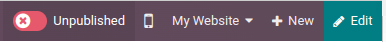

Páginas¶
Odoo le permite crear páginas para su sitio web y personalizar el contenido y la apariencia según sus necesidades.
Las páginas estáticas tienen contenido estable, como la página de inicio. Puede crear nuevas páginas de forma manual, definir sus URL, adaptar sus propiedades, entre otras cosas. Las páginas dinámicas se generan de manera dinámica. Todas las páginas que Odoo genera en automático, por ejemplo, cuando instala una aplicación o módulo (como /tienda o /blog) o publica un nuevo producto o entrada en su blog, son páginas dinámicas, así que se gestionan de otra manera.
Creación de páginas¶
Las páginas del sitio web se pueden crear desde el frontend y backend. Para crear una nueva página para el sitio web, siga los siguientes pasos:
Abra la aplicación Sitio web, haga clic en el botpon + Nuevo en la parte superior derecha y seleccione Página;
O, vaya a y haga clic en Nuevo.
Escriba un Título de página. Este título se usa en el menú y en la URL de la página.
Haga clic en Crear.
Personalice el contenido y apariencia de la página usando el creador de sitios web, haga clic en Guardar.
Publique la página.
Nota
Desactive la opción Agregar al menú si la página no debe aparecer en el menú.
Gestión de página¶
Publicar/No publicar páginas¶
Es necesario que publique las páginas para que los visitantes del sitio web puedan acceder a ellas. Para publicar o cambiar este estado en una página, acceda a ella y presione el botón ubicado en la esquina superior derecha de Sin publicar a Publicado, o viceversa.
Nota
También es posible:
publicar/sin publicar una página desde las propiedades de una página, donde puede definir una fecha de publicación y/o restringir la visibilidad de una página si es necesario;
Publicar o no publicar varias páginas al mismo tiempo: vaya a , seleccione las páginas, luego haga clic en Acción y seleccione Publicar o Sin publicar.
Página de inicio¶
Cuando crea un sitio web, Odoo crea una página específica de inicio de manera predeterminada, pero puede definir cualquier página del sitio web como su página principal. Vaya a y en la sección Información del sitio web defina la URL de la página deseada en el campo URL de la página de inicio (por ejemplo, /tienda).
También puede definir cualquier página estática como su página de inicio desde . Seleccione la pestaña Publicar y active la opción Usar como página de inicio.
Propiedades de página¶
Para modificar las propiedades de una página estática, acceda a la página que desea modificar y luego a .
La pestaña de Nombre le permite:
renombrar la página usando el campo Nombre de la página
modificar la URL de la página. En este caso, puede redirigir la URL antigua a la nueva si así lo necesita. Para hacerlo, habilite la opción Redirigir URL antigua, luego seleccione el Tipo de redirección:
301 Movido de forma permanente: para redirigir la página de manera permanente;
302 Movido de forma temporal: para redirigir la página temporalmente.

Después, puede adaptar las propiedades de la página en la pestaña de Publicar:
Mostrar en el menú superior: desactívelo si no quiere que la página aparezca en el menú;
Usar como página de inicio: actívela si quiere que la página sea la página de inicio de su sitio web;
Indexado: desactivelo si no quiere que esta página aparezca en los resultados de los motores de búsqueda;
Publicado: actívelo para publicar la página;
Fecha de publicación: para publicar la página en un momento específico, seleccione las fechas, haga clic en el icono de reloj para establecer la hora, luego haga clic en la casilla verde para validar su selección.
Visibilidad: seleccione quién puede acceder a la página:
Todos
Registrados
Grupo restringido: seleccione el acceso a grupos de usuarios en el campo de Grupo autorizado.
Con contraseña: ingrese la contraseña en el campo de Contraseña.
Truco
Algunas de estas propiedades se pueden modificar desde .
Duplicar páginas¶
Para duplicar la página, acceda a la página y luego vaya a y haga clic en Duplicar página. Vaya a Nombre de la página, luego haga clic en OK. De manera predeterminada, la nueva página se agrega después de la página duplicada en el menú, pero la puede eliminar del menú o cambiar su posición usando el editor de menús.
Eliminar páginas¶
Para eliminar una página, siga los siguientes pasos:
Acceda a la página, luego vaya a y haga clic en Eliminar página.
Aparecerá una ventana emergente en la pantalla con todos los enlaces que refieren a la página que quiere eliminar organizados por categoría. Para asegurar que los visitantes no terminen en una página de error 404, debe actualizar todos los enlaces de su sitio web que se refieran a esa página. Para hacerlo, expanda una categoría, y luego haga clic en un enlace para abrirlo en una nueva ventana. También puede crear una redirección para la página eliminada.
Una vez que haya actualizado los enlaces (o haya establecido una redirección), seleccione la casilla de Estoy seguro de esto y luego haga clic en OK.
Mapeo de redirección de URL¶
El mapeo de la redirección de URL consiste en enviar a los visitantes y motores de búsqueda a una URL distinta a la que solicitaron al inicio. Esta técnica se usa, por ejemplo, para evitar enlaces rotos cuando elimina una página, modifica su URL o migra su sitio de otra plataforma a un dominio de Odoo. También puede utilizarla para mejorar la Optimización de motores de búsqueda (SEO).
Para acceder a las redirecciones de URL ya existentes y crear otras nuevas, active el modo desarrollador y vaya a .
Nota
Se agrega un registro de redirección de forma automática cada que modifica la URL de una página y habilita Redireccionar URL antigua.
Puede configurar redireccionamientos para páginas dinámicas y estáticas.
Para crear una nueva redirección, haga clic en el botón Nuevo y complete los campos:
Nombre: escriba un nombre para identificar la redirección.
Acción: seleccione el tipo de redirección:
404 No encontrado: los visitantes son redirigidos a una página de error 404 cuando intentan acceder a una página que no está publicada o que fue eliminada.
301 Movido permanentemente: para redirecciones permanentes de páginas estáticas que no están publicadas o que fueron eliminadas. La nueva URL aparece en los resultados de los motores de búsqueda y los navegadores almacenan la redirección en caché.
302 Movido temporalmente: para redirecciones a corto plazo, por ejemplo, si está rediseñando o actualizando la página. Los navegadores ya no almacenan la nueva URL en caché ni aparece en los resultados de los motores de búsqueda.
308 Redirect/Rewrite: para redirecciones permanentes de páginas dinámicas existentes. La URL cambia de nombre, el nuevo nombre aparece en los resultados de los motores de búsqueda y los navegadores la almacenan en caché. Use este tipo de redirección para renombrar una página dinámica, por ejemplo, si desea renombrar
/tiendaa/mercado.
URL de: escriba la URL desde la que se redirigirá (por ejemplo,
/acerca-de-la-empresa) o busque la página dinámica deseada y selecciónela de la lista.URL a: para los redireccionamientos 301, 302 y 308 escriba la URL a la que desea redirigir. Si se trata de una URL externa, asegúrese de incluir el protocolo (por ejemplo,
https://).Sitio web: seleccione un sitio web específico.
Secuencia: para definir el orden en el que se realizan los redireccionamientos, por ejemplo, en el caso de cadenas de redireccionamiento (es decir, una serie de redirecciones donde una URL redirige a otra, que también redirige a otra URL).
Active el botón Activar para desactivar la redirección.
Importante
Los redireccionamientos 404, 301 y 302 están diseñados para migrar el tráfico de páginas que no están publicadas o que fueron eliminadas a nuevas páginas, mientras que el redireccionamiento 308 se utiliza en redirecciones permanentes de páginas existentes.
Ver también